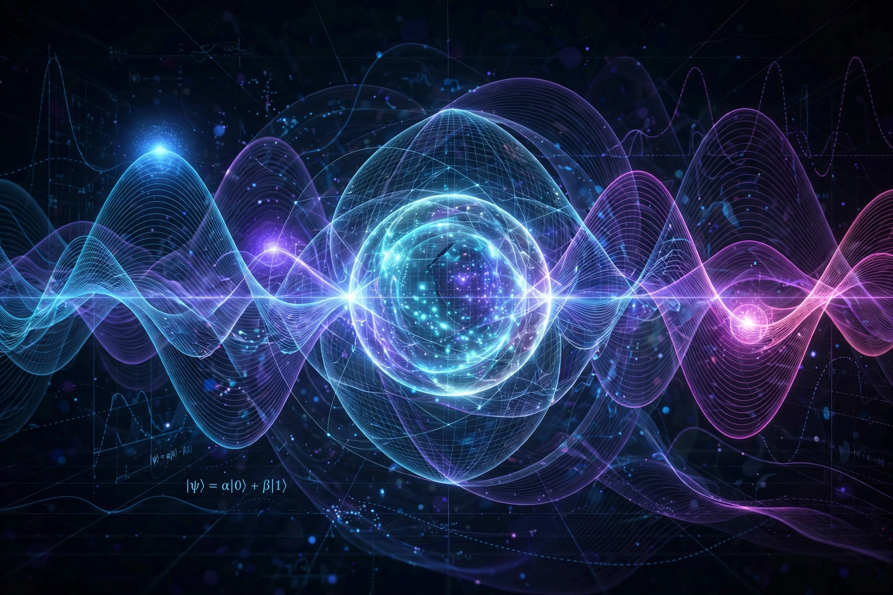

Quantum superposition is a fundamental principle of quantum mechanics: any two (or more) quantum states can be added together ("superposed") to form another valid quantum state; conversely, every quantum state can be represented as a sum of two or more distinct states. It underlies interference, the double-slit experiment, and quantum computing.

Mathematically, solutions of the Schrödinger equation are linear: if ψ1 and ψ2 are solutions, so is any combination aψ1 + bψ2. Probabilities come from squared amplitudes (Born rule), and cross-terms produce interference.
An electron in a double-slit experiment passes in superposition through both slits; a qubit can be α|0⟩ + β|1⟩; Schrödinger's cat dramatises a macroscopic superposition. Measurement and decoherence explain why superpositions are not observed at everyday scales.
Copenhagen, many-worlds, and other interpretations differ on what superposition and collapse mean physically.